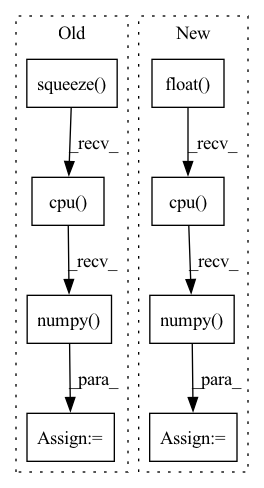

Pattern ID :35046

Before Change
pred = model(
torch.autograd.Variable(batch).to(device), lengths.cpu().numpy()
) //// perform forward pass
pred = torch.squeeze(pred)
loss = criterion(
pred.to(device), torch.autograd.Variable(targets.float()).to(device)
) //// compute loss
pred_val = pred >= 0.5 //// get predictions
y_true += list(targets.int())
y_pred += list(pred_val.data.int().detach().cpu().numpy())
total_loss += loss
acc = accuracy_score(y_true, y_pred) //// computing accuracy using sklearn"s function
After Change
)
y_true += list(targets.float())
y_pred += list(pred.data.float().detach().cpu().numpy())
total_loss += loss
//// computing accuracy using sklearn"s function
acc = r2_score(y_true, y_pred)
In pattern: SUPERPATTERN
Frequency: 3
Non-data size: 8
Instances
Fragment ID: 100122534
Project Name: shahrukhx01/siamese-nn-semantic-text-similarity
Commit Name: f3d054dd14ef532c408b1306c3341115777ac22f
Time: 2021-12-30
Author: sk28671@gmail.com
File Name: siamese_sts/trainer/train.py
M Class Name: AnonimousClass
N Class Name: AnonimousClass
M Method Name: evaluate_dev_set(5)
N Method Name: evaluate_dev_set(5)
M Parent Class:
N Parent Class:
M File Name: siamese_sts/trainer/train.py
N File Name: siamese_sts/trainer/train.py
M Start Line: 78
M End Line: 95
N Start Line: 91
N End Line: 116
'>
Before Change
pred = model(
torch.autograd.Variable(batch).to(device), lengths.cpu().numpy()
) //// perform forward pass
pred = torch.squeeze(pred)
loss = criterion(
pred.to(device), torch.autograd.Variable(targets.float()).to(device)
) //// compute loss
loss.backward() //// perform backward pass
optimizer.step() //// update weights
pred_val = pred >= 0.5 //// get predictions
y_true += list(targets.int().numpy()) //// accumulate targets from batch
y_pred += list(
pred_val.data.int().detach().cpu().numpy()
) //// accumulate preds from batch
total_loss += loss //// accumulate train loss
acc = accuracy_score(
After Change
y_true += list(targets.float().numpy())
//// accumulate preds from batch
y_pred += list(pred.data.float().detach().cpu().numpy())
//// accumulate train loss
total_loss += loss
'>
Fragment ID: 100122533
Project Name: shahrukhx01/siamese-nn-semantic-text-similarity
Commit Name: f3d054dd14ef532c408b1306c3341115777ac22f
Time: 2021-12-30
Author: sk28671@gmail.com
File Name: siamese_sts/trainer/train.py
M Class Name: AnonimousClass
N Class Name: AnonimousClass
M Method Name: train_model(6)
N Method Name: train_model(6)
M Parent Class:
N Parent Class:
M File Name: siamese_sts/trainer/train.py
N File Name: siamese_sts/trainer/train.py
M Start Line: 16
M End Line: 47
N Start Line: 16
N End Line: 59
'>
Before Change
else:
self.process()
output_img = self.post_process()
output_img = output_img.data.squeeze().float().cpu().clamp_(0, 1).numpy()
output_img = np.transpose(output_img[[2, 1, 0], :, :], (1, 2, 0))
if img_mode == "L":
output_img = cv2.cvtColor(output_img, cv2.COLOR_BGR2GRAY)
After Change
else:
self.process()
output_img_t = self.post_process()
output_img = output_img_t.data.squeeze().float().cpu().clamp_(0, 1).numpy()
output_img = np.transpose(output_img[[2, 1, 0], :, :], (1, 2, 0))
if img_mode == "L":
output_img = cv2.cvtColor(output_img, cv2.COLOR_BGR2GRAY)
del output_img_t
'>
Fragment ID: 100122523
Project Name: sczhou/codeformer
Commit Name: 581abcb93b238be31d0cfea8978c3d204114bc1b
Time: 2022-09-04
Author: shangchenzhou@gmail.com
File Name: basicsr/utils/realesrgan_utils.py
M Class Name: RealESRGANer
N Class Name: RealESRGANer
M Method Name: enhance(4)
N Method Name: enhance(4)
M Parent Class:
N Parent Class:
M File Name: basicsr/utils/realesrgan_utils.py
N File Name: basicsr/utils/realesrgan_utils.py
M Start Line: 199
M End Line: 211
N Start Line: 199
N End Line: 211